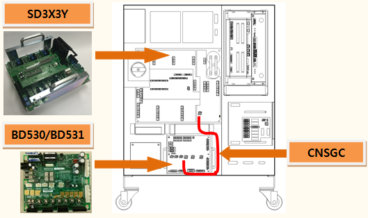
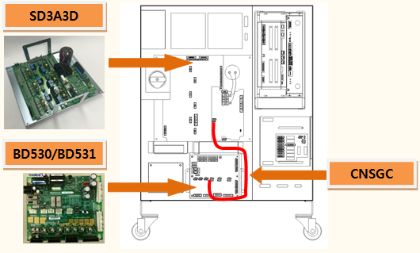
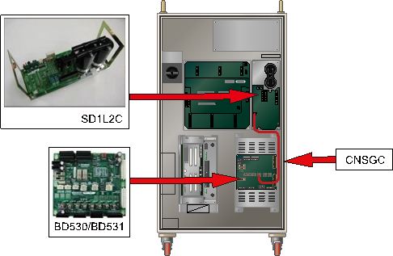
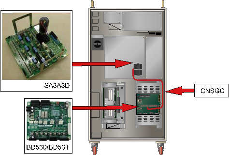

기존 에러코드: E0011 AMP의 과전압(P-N) 발생
1.1.55.1. 개요
모터를 구동하는 서보 구동장치의 직류 전압(P-N)이 설정치를 초과하였습니다.
1.1.55.2. 원인 및 점검방법
|
다이오드 모듈에서부터 PN전압 저하를 검지하는 경로 또는 PN방전회로에 이상이 발생하였습니다.
<모터 오프 상태에서도 항상 발생하는 경우> (1) 과전압 에러 검지 관련 케이블을 점검하여 주십시오. n CNSGC 케이블을 교체한 후 점검하여 주십시오. (2) 과전압 에러 검지 관련 부품을 점검하여 주십시오. n BD530/BD531 보드를 교체한 후 점검하여 주십시오. n 서보 구동장치를 교체한 후 점검하여 주십시오. |
(1)과전압 에러 검지 관련 케이블을 점검하여 주십시오.
n CNSGC 케이블 교체 점검
CNSGC 케이블을 정상품과 교체하여 에러가 발생하지 않으면 케이블의 접속 불량입니다. CNSGC 케이블을 정상품으로 교체하여 사용하시기 바랍니다.
(2)과전압 에러 검지 관련 부품을 점검하여 주십시오.
AMP의 과전압 발생 에러는 서보 구동장치에 공급되는 직류 전원 (P-N)이 설정된 레벨을 초과하는 경우에 서보 구동장치에서 검지합니다. 발생된 에러는 CNSGC 케이블을 통하여 BD530/BD531보드에서 처리합니다.
n BD530/BD531 교체 점검
BD530/BD531을 정상품과 교체하여 에러가 발생하지 않으면 해당 보드의 불량입니다. BD530/BD531을 정상품으로 교체하여 사용하시기 바랍니다.
n 서보 구동장치의 교체 점검
AMP의 과전압 발생 에러를 검지하는 모듈은 다음과 같습니다.
Ø Hi5a-S제어기 : 중형용 SD3X3Y, 소형용 SD3A3D
Ø Hi5a-N제어기 : 중형용 SD1L2C, 소형용 SA3A3D
현재 사용 중인 제어기의 구성품을 확인하신 후 점검하시기 바랍니다. 정상품과 교체하여 에러 재발 여부를 확인하여 주십시오.

(a) Hi5a-S00 제어기

(b) Hi5a-S30 제어기

(c) Hi5a-N00 제어기

(d) Hi5a-N30 제어기
그림 1.164 과전압 발생 에러 관련 부품 배치